الدرس 1: الربط بمصادر البيانات في Power BI Desktop
تعلم كيفية الاتصال بمصادر البيانات المختلفة واستيراد ملفات Excel لبناء الموديلز والتقارير الاحترافية لشهادة مايكروسوفت PL-300.
نظرة عامة على الدرس (Overview)
في الشرح ده، هنمشي سوا خطوة بخطوة عشان نعرف إزاي نربط برنامج Power BI Desktop بمصادر البيانات المختلفة.
دي بتعتبر أول وأهم خطوة في رحلتك لبناء الموديلز (Data Modeling) وإنشاء التقارير التفاعلية اللي بتطلبها منك شهادة مايكروسوفت PL-300!
In this quickstart, you connect to data using Power BI Desktop, which is the first step in building data models and creating reports.
If you're not signed up for Power BI, sign up for a free trial before you begin.
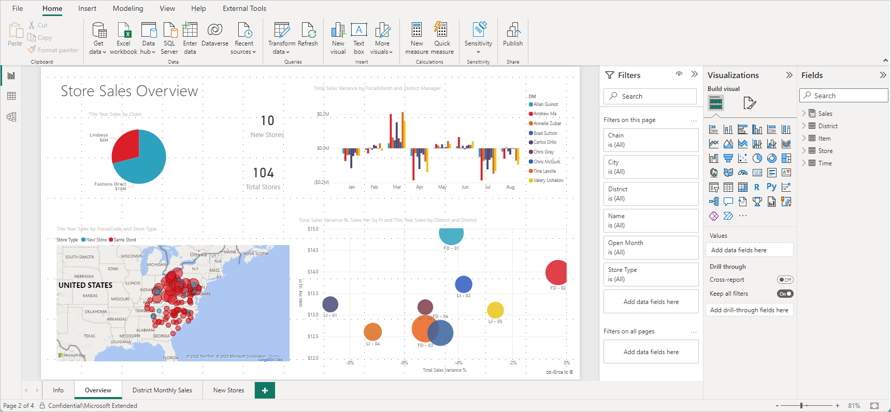
1. المتطلبات الأساسية للبدء (Prerequisites)
عشان تنفذ الخطوات دي على جهازك وتطبق بنفسك، محتاج تجهز الحاجات الأساسية التالية:
- تحميل برنامج Power BI Desktop: تطبيق مجاني بيشتغل على الكمبيوتر. تقدر تحمله مباشرة من موقع مايكروسوفت أو من متجر Microsoft Store.
- تأكد من وجود Edge WebView2: بيتثبت تلقائياً مع Power BI وبيستخدم للمصادقة وتأكيد الهوية عند الاتصال بالخدمات السحابية.
To complete the steps in this article, you need the following resources:
- Download and install Power BI Desktop (free application). You can download it directly or from the Microsoft Store.
- For many data connectors, Microsoft Edge WebView2 is required for authentication. WebView2 is typically installed automatically.
2. تشغيل برنامج Power BI Desktop
بعد ما تثبت البرنامج على جهازك، افتحه. أول ما يفتح هتظهرلك شاشة ترحيب فيها شروحات وفيديوهات تعليمية.
تقدر تتابع التعليمات دي أو تقفل نافذة الترحيب عشان يبدأ معاك بـ Canvas فاضي (Blank Canvas)، وده المكان اللي هتبني فيه الرسومات التفاعلية والتقارير.
Once you install Power BI Desktop, launch the application so it's running on your local computer.
You're presented with a Power BI tutorial. Follow the tutorial or close the dialog to start with a blank canvas. The canvas is where you create visuals and reports from your data.
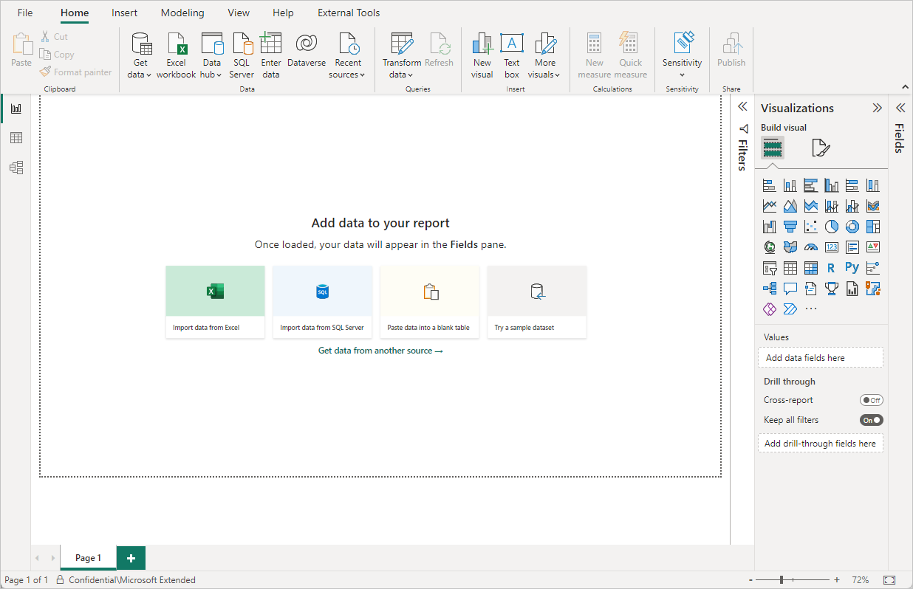
3. الاتصال بالبيانات (Connect to Data)
برنامج Power BI Desktop بيدي لك مرونة تامة للاتصال بأغلب أنواع مصادر البيانات في العالم؛ سواء ملفات اكسيل بسيطة، أو خدمات سحابية زي Salesforce, Microsoft Dynamics, Azure Blob Storage، أو قواعد بيانات ضخمة.
خطوات الاتصال:
- من الشريط الرئيسي فوق (Home Ribbon) اضغط على زرار Get data.
- هتفتح لك نافذة فيها كل مصادر البيانات المتاحة. اختر منها نوع المصدر (مثل Excel) واضغط على زرار Connect.
- البرنامج هيطلب منك تختار مكان الملف المتاح لديك واضغط Open.
With Power BI Desktop, you can connect to many different types of data. These sources include basic data sources, such as a Microsoft Excel file, to online services like Salesforce, Dynamics, Azure Blob Storage, and many more.
To connect to data, from the Home ribbon select Get data.
Select Excel from the Get Data window, then select the Connect button. Browse to your file and select Open.
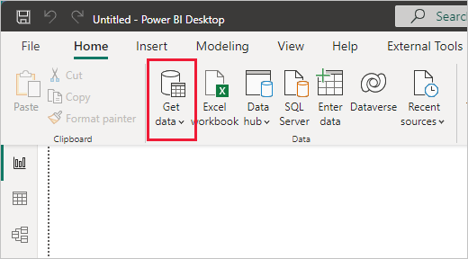
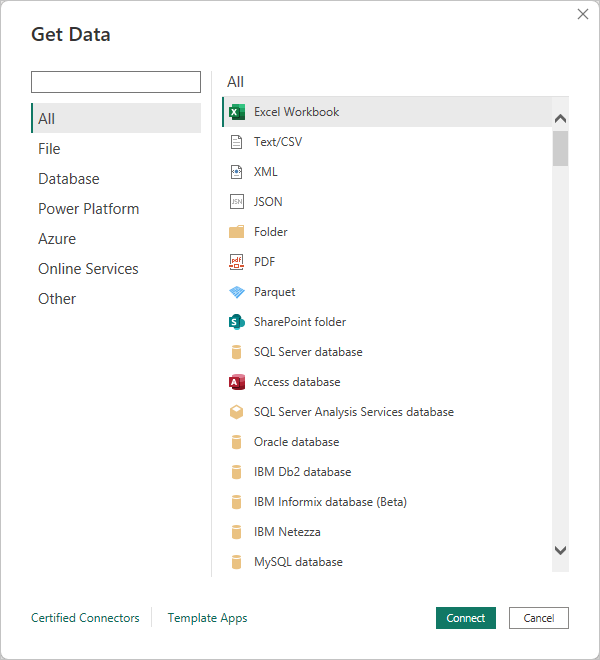
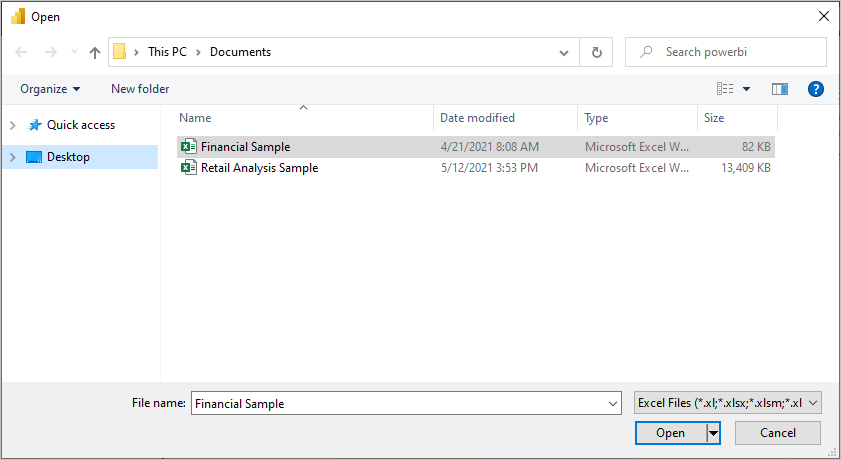
5. استعراض البيانات في لوحة الحقول (Fields Pane)
أول ما يدوس Load والتحميل يخلص، هتلاقي البيانات استقرت وظهرت في لوحة Fields (أو Data Pane في الإصدارات الأحدث) الموجودة على اليمين.
لما تضغط على السهم اللي جنب اسم الجدول، هيتفتح وتشوف كل الأعمدة والحقول المتاحة فيه، وبكده تكون جاهز تبدأ تعمل Drag & Drop للأعمدة وتعمل أول التقرير بتاعك!
Once you load the tables, the Fields pane shows you the data. You can expand each table by selecting the arrow beside its name.
In the image, the table is expanded, showing each of its fields. And that's it! You've connected to data in Power BI Desktop.
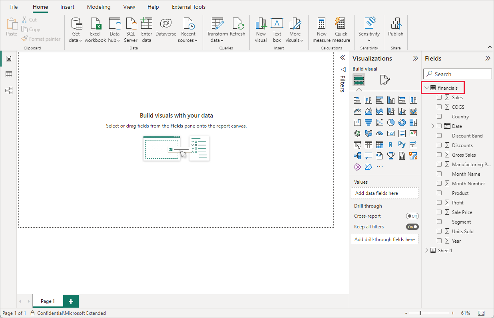
6. مقدمة وسيناريو استيراد البيانات (Introduction)
في سيناريو شركة Tailwind Traders، مطلوب منك تجميع وتجهيز بيانات من مصادر مختلفة كلياً: مبيعات المعاملات مخزنة في قواعد SQL Server، وبيانات الموظفين التكميلية في ملفات Excel، وتفاصيل الشحنات كملفات JSON في قواعد Azure Cosmos DB، بالإضافة لتوقعات المبيعات في Azure Analysis Services.
وظيفتك تدمج البيانات دي كلها وتعمل لها تنظيف وتجهيز باستخدام Power Query قبل ما تبني الموديل والتقارير ونشرها على Power BI Service.
In this module scenario for Tailwind Traders, senior leadership requires building reports dependent on data residing in multiple repositories: SQL Server transactions, HR Excel files, Cosmos DB shipment JSON documents, and Azure Analysis Services financial projections.
Using Power Query, you extract, transform, and clean the data before loading it into Power BI Desktop to construct semantic models, design interactive reports, and publish them to the Power BI service.
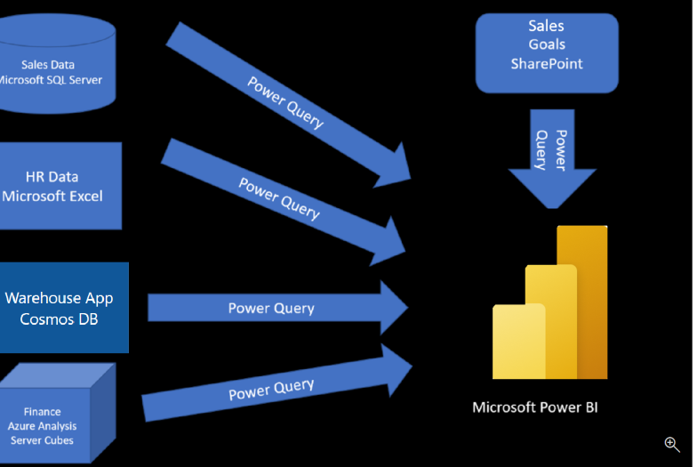
7. استيراد البيانات من الملفات (Data Files)
الملفات المسطحة زي Excel, CSV, Text Files بتعد من أكتر المصادر الشائعة للبيانات. تقدر تربط ملف مخزن محلياً على جهازك أو ملف موجود في السحابة على OneDrive أو SharePoint.
ميزة الربط بملفات السحابة هي إمكانية التحديث التلقائي المجدول للبيانات (Scheduled Refresh) بدون الحاجة لفتح Power BI Desktop أو إعداد Gateway يدوياً، بعكس الملفات المحلية التي تتطلب إدارة مصادر البيانات بنفسك.
Flat files such as Microsoft Excel, CSV, and text files are among the most common data sources. You can connect to files stored locally on your machine or hosted in the cloud via OneDrive for Work/School or SharePoint Online.
Connecting to cloud-hosted files ensures seamless scheduled data refreshes, whereas local file connections require manual dataset maintenance or configuring an On-premises Data Gateway.
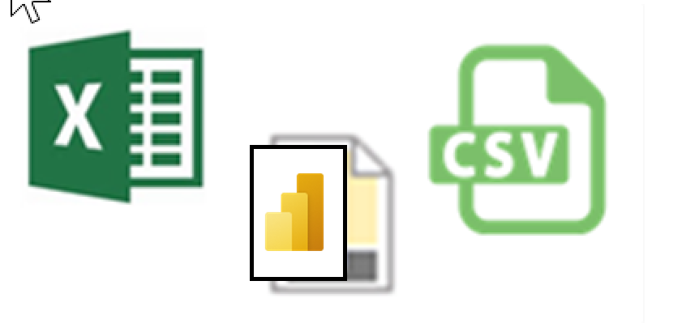
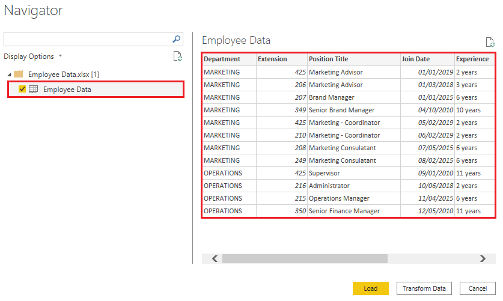
8. الاتصال بقواعد البيانات العلاقاتية (Relational Data)
قواعد البيانات العلاقاتية زي Microsoft SQL Server بتخزن البيانات في جداول مرتبطة بعلاقات. عشان تربط بها بتدخل اسم السيرفر والداتابيز، وبتحدد نوع المصادقة (Windows Authentication أو Database Account).
تقدر تختار الجداول من نافذة Navigator، أو تكتب استعلام SQL Statement (T-SQL) مخصص عشان ترفع فقط الصفوف والأعمدة المطلوبة وتوفر في كمية البيانات المنقولة والأداء.
Relational databases such as Microsoft SQL Server store data in structured tables linked by relational key constraints. Connecting requires providing the server name, optional database name, and credential authentication method.
You can select tables through the Navigator dialog or supply a custom T-SQL query statement to extract pre-filtered data directly from the server, minimizing data transfer volume.
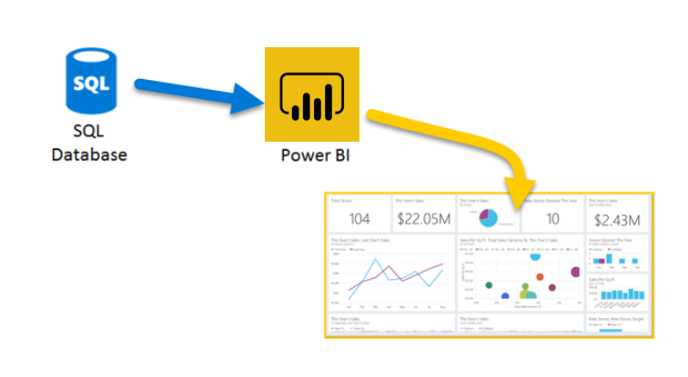
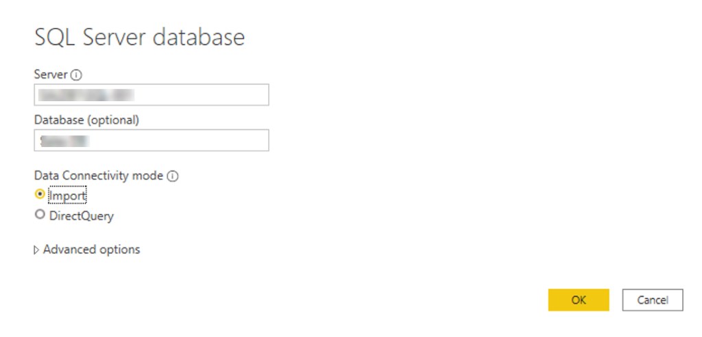
9. إنشاء تقارير ديناميكية باستخدام المعاملات (Dynamic Parameters)
المعاملات (Parameters) بتخلي الاستعلامات والتقارير ديناميكية ومستجيبة للتغييرات بمرونة عالية بدلاً من تثبيت القيم داخل الكويري:
- التبديل بين بيئات العمل: تقدر تغير بيئة الاتصال بسهولة بين بيئة التطوير (Development) والتجربة (Testing) والإنتاج (Production) بتعديل قيمة الـ Parameter فقط.
- الدوال المخصصة (Custom Functions): تحويل الكويري إلى دالة مخصصة تتيح تطبيق نفس خطوات التحويل على عدة مدخلات أو أعمدة دفعة واحدة.
Parameters allow queries and reports to be dynamic by substituting hardcoded values with customizable placeholder variables:
- Environment Swapping: Seamlessly switch connections between Development, Testing, and Production environments by altering a single parameter value.
- Custom Functions: Convert existing queries into reusable custom functions that dynamically apply transformation logic across multiple data inputs.
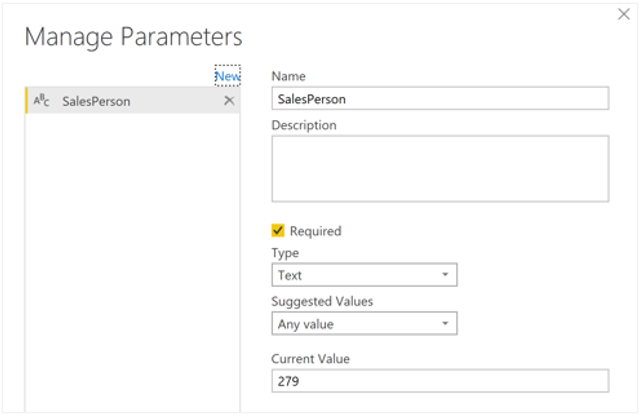
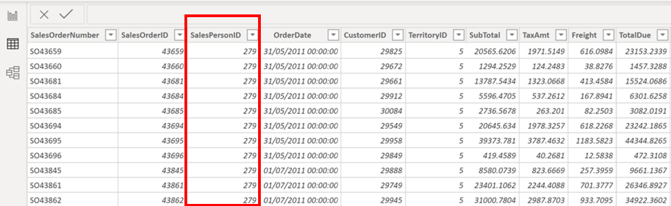
10. الربط بقواعد البيانات غير العلاقاتية (NoSQL Database)
قواعد بيانات NoSQL زي Azure Cosmos DB بتخزن البيانات في شكل مستندات مرنة مثل JSON بدون جدول بتصميم ثنائي الأبعاد.
عند الاتصال بـ Cosmos DB داخل Power BI، السجلات بتظهر في البداية كـ Records مرادقة لـ JSON، وبتحتاج تستخدم زرار Expand في Power Query لفك الكائنات المترابطة والأكواد وتحويلها لأعمدة وصفوف منظمة.
NoSQL databases like Azure Cosmos DB store semi-structured data as JSON documents rather than rigid tabular schemas.
Upon connecting to Cosmos DB in Power BI, data appears initially as nested JSON Records. You use the Expand feature in Power Query Editor to unpack hierarchical document attributes into clean tabular columns.
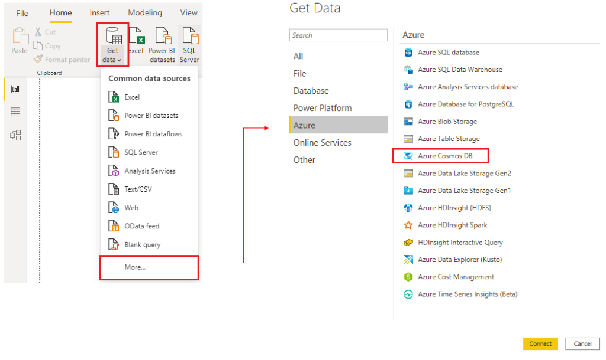
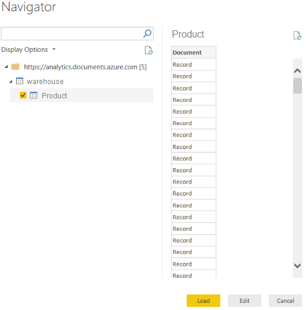
11. الاتصال بالخدمات السحابية وقوائم شيربوينت (Online Services)
برنامج Power BI بيتيح لك الاتصال بالخدمات والتطبيقات السحابية المختلفة مثل SharePoint Online Lists و Salesforce و Google Analytics.
في حالة الربط بـ SharePoint Online List، بتدخل رابط الموقع الرئيسي (Site URL)، وتختار المصادقة بواسطة حساب المؤسسة (Organizational Account)، ثم تختار القائمة المطلوبة من نافذة Navigator.
Power BI Desktop integrates with cloud services including SharePoint Online Lists, Salesforce, Google Analytics, and Microsoft Dynamics 365.
To connect to a SharePoint Online List, enter the site collection URL, authenticate with your Organizational Account, and select the desired list from the Navigator pane.
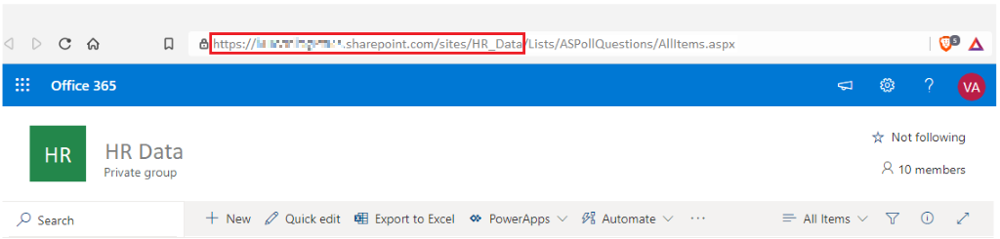
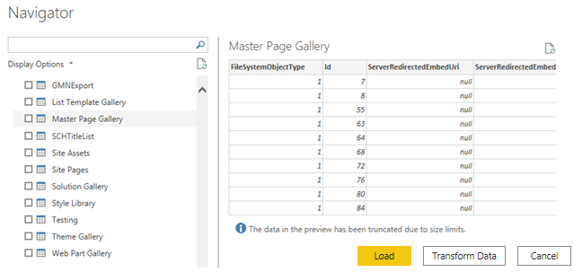
12. اختيار نمط تخزين البيانات (Storage Mode: Import vs DirectQuery)
تحديد Storage Mode بيحدد طريقة تعامل Power BI مع البيانات وتخزينها:
- Import Mode (الافتراضي): بيتم نسخ البيانات بالكامل وحفظها في الذاكرة (VertiPaq Engine). بيدي أعلى سرعة للتفاعل مع الرسومات والتصفية، ويتطلب تحديث دوري (Data Refresh).
- DirectQuery Mode: لا يتم نسخ البيانات، بل يتم إرسال استعلامات مباشرة لداتابيز المصدر مع كل تفاعل بالتقرير. مناسب للبيانات الضخمة جداً (Big Data) أو الحالات اللي بتتطلب بيانات لحظية (Real-time).
- Dual Mode: يجمع بين الميزتين؛ الجدول يعمل كـ Import للسرعة وتخزين الكاش، ويستجيب لـ DirectQuery عند الحاجة.
Selecting the appropriate storage mode balances reporting performance against data freshness requirements:
- Import Mode (Default): Imports and compresses data into the in-memory VertiPaq engine. Provides maximum performance and DAX capability with scheduled refreshes.
- DirectQuery Mode: Queries the underlying source database directly without importing data. Ideal for massive datasets or strict real-time reporting needs.
- Dual Mode: Hybrid behavior where tables act as cached Import data for fast visual rendering, but can fulfill DirectQuery requests when needed.
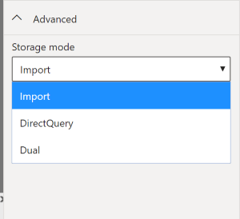
13. الاتصال بـ (Azure Analysis Services)
خدمة Azure Analysis Services هي منصة سحابية (PaaS) لإنشاء موديول بيانات مؤسسي موحد (Enterprise Tabular Model).
عند الربط بها، يتوفر خيار Connect live (الاتصال المباشر)؛ في الخيار ده الموديل والمقاييس (Measures) والمعادلات مبنية ومحسوبة بالفعل في السيرفر، ويكون Power BI Desktop مجرد شاشة لاستعراض التقارير دون الحاجة لإعادة استيراد أو بناء الموديل.
Azure Analysis Services provides enterprise-grade tabular data models hosted in the Azure cloud.
When connecting, selecting Connect live links your Power BI report directly to the central model. Calculations, measures, and relationships remain managed centrally on the server, allowing instant visual reporting without data duplication.
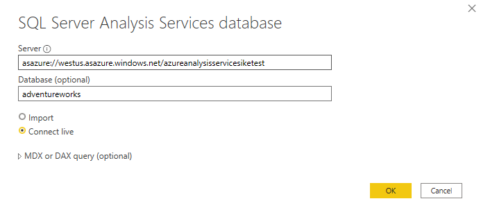
14. حل مشاكل الأداء وطي الاستعلامات (Performance & Query Folding)
عشان تضمن سرعة واستجابة التقرير، Power BI بيوفر تقنيات وأدوات للتحسين:
- طي الاستعلامات (Query Folding): تحويل خطوات التنظيف والتصفية في Power Query إلى كود SQL أصلي (Native Query) يتنفذ داخل السيرفر قبل نقل البيانات لـ Power BI.
- أداة تشخيص الاستعلام (Query Diagnostics): أداة تتيح لك تتبع وتحليل الوقت المستغرق في تنفيذ خطوات Power Query وتحديد الخطوات الثقيلة التي تسبب البطء.
- Performance Analyzer: لقياس أداء العناصر البصرية على الصفحة ومعرفة وقت معالجة الكويري والرسومات.
To address report performance and optimize data load times, Power BI provides built-in diagnostic tools and query optimization techniques:
- Query Folding: Translates Power Query transformation steps back into native database SQL queries executed directly at the source server for peak efficiency.
- Query Diagnostics: Logs and breaks down time spent during query evaluations to pinpoint performance bottlenecks in Power Query.
- Performance Analyzer: Measures visual rendering speed and DAX engine response times within Power BI Desktop reports.
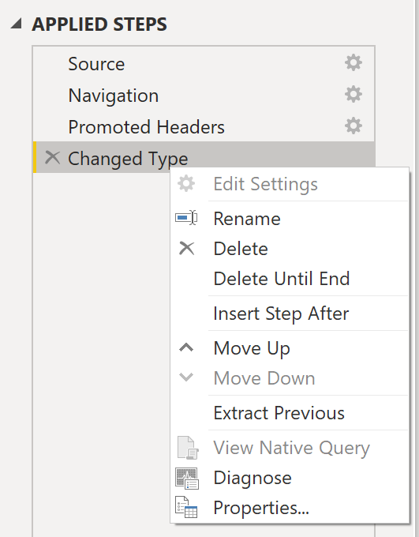
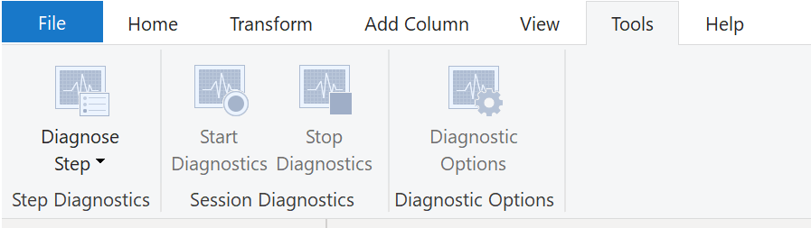
15. معالجة أخطاء استيراد البيانات الشائعة (Resolve Import Errors)
أثناء استيراد البيانات، قد تواجه أخطاء شائعة يتم معالجتها كالآتي:
- Query Timeout Expired (انتهاء مهلة الاستعلام): يحدث بسبب سحب حجم ضخم من البيانات. حله: تقليل الصفوف أو الأعمدة وتصفية البيانات في SQL query.
- Could Not Find File (تعذر العثور على الملف): يحدث عند نقل الملف أو تغيير اسمه. حله: تعديل مسار الملف عبر Data Source Settings في Power Query.
- Data Type Mismatch: يحدث عند وجود قيم غير متوافقة في العمود. حله: مراجعة خطوة Change Type في Power Query وتنظيف القيم الخاطئة.
Common data import errors encountered during ingestion and their resolutions include:
- Query Timeout Expired: Occurs when fetching excessive data volumes. Resolved by filtering rows, selecting fewer columns, or refining the source SQL query.
- Could Not Find File: Triggered when source file paths or names change. Fixed by updating the file path in Data Source Settings.
- Data Type Mismatch: Happens when incoming values conflict with column data types. Resolved by updating Change Type steps in Power Query.
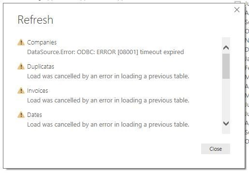
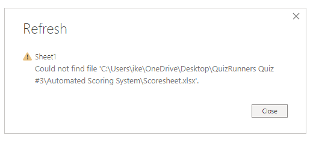
16. الملخص النهائي لموديول استيراد البيانات (Module Summary)
في الموديول ده، غطينا كافة جوانب سحب البيانات من مختلف المصادر (ملفات مسطحة، قواعد بيانات علاقاتية وغير علاقاتية، خدمات سحابية، وسيرفرات تحليلية).
عرفنا إزاي نختار Storage Mode المناسب (Import vs DirectQuery)، وإزاي نستغل Query Folding لتحسين الأداء ونحل أخطاء الاستيراد الشائعة لتجهيز بيانات دقيقة وجاهزة للموديلينج والتقارير في امتحان PL-300!
In this module, you learned how to ingest data across diverse platforms including flat files, relational/NoSQL databases, cloud applications, and Azure Analysis Services.
You explored selecting appropriate Storage Modes (Import vs. DirectQuery), leveraging Query Folding for performance tuning, and troubleshooting common import errors to establish robust data connections for PL-300 certification.
- الفرق بين Load و Transform Data: زرار
Loadبيحمل البيانات مباشرة للموديل، بينماTransform Dataبيفتح تحرير Power Query لتنظيف البيانات وتغيير أنواع الأعمدة قبل تحميلها. - أنواع الاتصال (Storage Modes): الربط بملفات Excel بيكون من نوع Import Mode (يتم نسخ البيانات وحفظها داخل ملف .pbix).
- تأثير تحديث البيانات (Data Refresh): في حالة تغير ملف البيانات في مصدره، تقدر تضغط Refresh في Power BI ليتم إعادة قراءة البيانات فوراً.